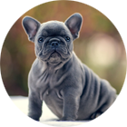
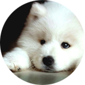
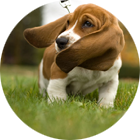
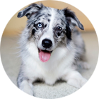
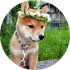
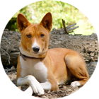
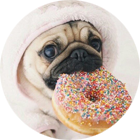

"like a mini baguette with legs"
 click for info Let's just start with the obvious choice shall we? Have you ever seen anything as cute as a French bulldog puppy? No you have not. I'm a softie when it comes to squish-faced dog breeds (maybe because it's easier for them to give kisses when they don't have a big snout obstructing them), so it's really no surprise that these little boys top the list. Plus, they're French, so they're automatically classy.
"a creature of boundless light and majesty"
 click for info Is that a... a cloud? A marshmallow? Wait... now three little black dots have come into focus. Oh my god, that's a dog. And what a dog it is! Majestic, noble, yet fluffy as all get out and the purest white fur you can find outside of the arctic circle make this dog one of the most wonderful dog breeds to exist. The white fur also adds an additional bonus: it's really easy to splash some color on there and make a Samoyed look like a mystical creature from another dimension.
"droopy by nature, yet persistent nonetheless"
 click for info Basset hounds are great because they always have a positive attitude. You sort of have to be relentlessly positive if you're born with ears meant for an elephant attached to a head no bigger than a softball. But they make it work so well! Sure, a windy day might blow their ears all over the place like two small wind socks, but that only adds to the basset hound's charm. This is a 10/10 dog.
"a companion fit for a divine huntress"
 click for info Am I the only one who thinks these dogs look like they're some warrior-dog companion that can control the earthly elements with its mind? Yes? Okay, fine. But you've got to admit that these dogs look awesome. The gray and black striations leading into white and brown patches gives the Australian shepherd a sort of superhero-esque look. Attach a cape to one of these dogs and you have your brand new cuddly comic book character.
"refined... elegant... squeezable cheeks..."
 click for info Shiba Inus look more refined and aloof than even the haughtiest of aristocrats. There's no such thing as a Shiba that isn't photogenic; go ahead, try and find a bad picture of this dog, I dare you. Give up? Yeah, that's because it can't be done. But Shibas are more than just refined and good picture models. They're also silly and fun and they have squeezable cheeks. All in all, definitely a great dog.
"alert and attentive; probably caffeinated"
 click for info Originally bred on the plains of the African savannah to hunt game, these dogs are alert, attentive, and are especially suited for lots of outside activity. Instead of barking, Basenjis let out a high-pitched howl that sounds really strange (but is also very cool). Additionally, Basenjis are not a particularly common breed, so having one of these little guys by your side is sure to turn heads on the street.
"clumsily sincere and sincerely clumsy"
 click for info Ah, the humble pug. Compact, curious, and something of a clown. Pugs are the squish-faced little comedians of the canine world - they're like ultra-dense neutron stars if neutron stars were made of joy and laughter instead of hot gaseous elements. On a scale from 1 to Good Dog, pugs top the scale, snorting and clumsily bounding along the way.